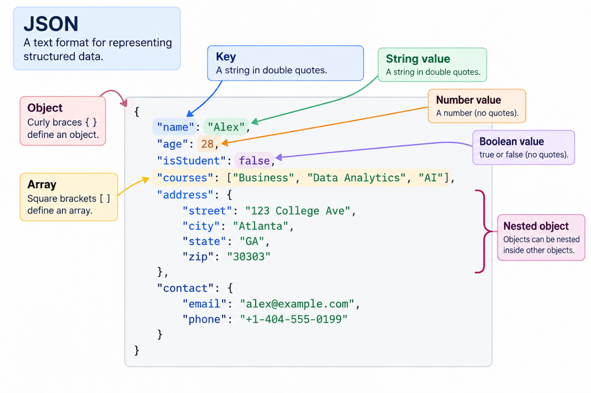

4.1 Data Warehouses, Data Lakes, and the Technology Behind "Big Data"
Netflix’s Need for Big Data
Every evening, hundreds of millions of subscribers log into Netflix, generating trillions of digital events. Every click, pause, search query, stream rate adjustment, and network buffering incident flows continuously into the cloud.16, 22 By the mid-2010s, this data intake reached multi-petabyte scales that severely strained conventional infrastructure.16 Netflix engineers relied on Amazon Simple Storage Service (Amazon S3) as a vast cloud repository, but as file counts swelled into the tens of millions, critical analytical operations began to stall.16 Standard directory listings took minutes to respond, concurrent data pipeline updates corrupted entire data partitions, and analytical queries yielded inconsistent results depending on when they were run.16
Rather than treating these breakdowns as an inevitable cost of doing business at scale, Netflix engineered a whole new architectural layer called Apache Iceberg.16, 21 Iceberg introduced an open table format that decoupled logical query structures from underlying physical storage files.17, 18 By open-sourcing Apache Iceberg, Netflix fundamentally altered modern data engineering, enabling enterprises like Apple, Adobe, Airbnb, and LinkedIn to query massive datasets reliably without compromising transactional accuracy.16, 19, 22
This shift highlights a widespread corporate trend: enterprise data generation is accelerating rapidly, with global data creation projected to reach 394 zettabytes by 2028.4 Over 64% of enterprises currently manage more than one petabyte of data, and 41% handle over 500 petabytes.4 Yet, aggressive software investments do not automatically translate into strategic clarity. Only 20% of corporate leaders express high confidence in their organization's data analysis capabilities.4 Understanding how raw data transforms into enterprise intelligence—and managing the technology stack that governs this evolution—has become a core responsibility for modern business managers.
In Chapter 2.4, we explored how integration connects data and processes across an organization, enabling information to flow between systems and supporting coordinated business operations. This chapter builds on that foundation by examining how organizations store, manage, and analyze the vast and diverse volumes of data generated by these connected systems. Understanding technologies such as data warehouses, data lakes, and data lakehouses helps explain how businesses turn integrated data into actionable insights and support increasingly sophisticated analytics and AI applications.
From First Principles: Categorizing Enterprise Data and Systems
To evaluate modern big data platforms, managers must first understand the primary categories of enterprise data and the systems designed to process them.
Structured versus Unstructured Data
Data generated by enterprise operations broadly falls into two categories:
- Structured Data: Highly organized information that fits neatly into traditional relational databases with rigid rows and columns. Examples include point-of-sale transaction logs, double-entry accounting ledgers, inventory counts, and customer account records. Structured data is easily queried using standard Structured Query Language (SQL).
- Unstructured Data: Information that lacks a predefined conceptual schema or tabular layout. Examples include video streams, audio recordings, PDF contracts, social media posts, satellite imagery, customer support emails, and Internet of Things (IoT) sensor telemetry. Unstructured and semi-structured data (such as JSON or XML files) represent more than 80% of all newly created enterprise information.

in the book.css stylesheet.
Show long description
The image is an educational infographic that explains JSON, a text format used to represent structured data. It has a white background, a title box in the upper-left corner, a large code panel in the center, and several colored annotation boxes around the code. Arrows and a bracket connect the annotations to the relevant parts of the example.
Title and definition
In the upper-left corner, a light-blue box contains the large, dark-blue heading “JSON.” Beneath it, the text reads: “A text format for representing structured data.”
Central JSON example
A large, light-gray panel with a thin gray border occupies most of the image. Inside it is an example of a JSON object, displayed in a monospaced font. The keys are primarily blue, string values are green, and numerical and Boolean values are shown in contrasting colors. The example represents a person named Alex and includes age, student status, courses, address, and contact information.
The complete JSON example reads:
{
"name": "Alex",
"age": 28,
"isStudent": false,
"courses": ["Business", "Data Analytics", "AI"],
"address": {
"street": "123 College Ave",
"city": "Atlanta",
"state": "GA",
"zip": "30303"
},
"contact": {
"email": "alex@example.com",
"phone": "+1-404-555-0199"
}
}
The example begins with an opening curly brace and ends with a closing curly brace. These braces enclose the entire JSON object. Each property consists of a key, a colon, and its associated value. Commas separate properties from one another.
The first property has the key "name" and the string value "Alex". The second property has the key "age" and the numerical value 28. The third property has the key "isStudent" and the Boolean value false, indicating that the example describes someone who is not a student.
The fourth property, "courses", contains an array with three string values: "Business", "Data Analytics", and "AI". The square brackets surrounding these values identify the array, and commas separate the individual elements.
The fifth property, "address", contains another object nested inside the main object. This nested object has four properties: "street" with the value "123 College Ave", "city" with the value "Atlanta", "state" with the value "GA", and "zip" with the value "30303". The ZIP code is represented as a string, enclosed in double quotation marks, rather than as a number.
The final property, "contact", contains a second nested object. It has an "email" property with the value "alex@example.com" and a "phone" property with the value "+1-404-555-0199". Both values are strings. Treating the phone number as a string preserves its formatting, including the plus sign and hyphens.
Annotations explaining JSON elements
Six colored annotation boxes surround the code panel. Each box identifies a JSON element and explains its role.
- Object — pink annotation on the left: The box reads, “Curly braces define an object.” A curved pink arrow points toward the opening curly brace at the beginning of the JSON example. An object groups related properties into a single structure.
- Key — blue annotation above the code: The box reads, “A string in double quotes.” A blue arrow points toward the key "name". A key identifies a property within an object. In the example, keys such as "name", "age", and "isStudent" identify the information represented by their corresponding values.
- String value — green annotation in the upper-right area: The box reads, “A string in double quotes.” A green arrow points toward the value "Alex". A string represents text and is enclosed in double quotation marks.
- Number value — orange annotation on the right: The box reads, “A number (no quotes).” An orange arrow points toward the value 28. Numbers are written without quotation marks when they are represented as numerical values in JSON.
- Boolean value — purple annotation on the right: The box reads, “true or false (no quotes).” A purple arrow points toward false. Boolean values express a true-or-false condition and are written in lowercase without quotation marks.
- Array — yellow annotation on the left: The box reads, “Square brackets [ ] define an array.” A yellow arrow points toward the "courses" property. An array holds an ordered collection of values. Here, it contains three course names, each represented as a string.
- Nested object — magenta annotation on the lower right: A magenta bracket marks the address object within the code. The adjacent box reads, “Objects can be nested inside other objects.” This illustrates that a property can contain an entire object rather than just a single string, number, or Boolean value. The "address" property contains one nested object, and the "contact" property contains another.
Operational versus Analytical Processing
When organizations first began digitizing business processes, they attempted to run complex analytical reports directly on operational databases. This setup routinely created severe performance bottlenecks. Running a heavy sales summary query during peak business hours locked database tables, slowing down customer checkout systems. To resolve this conflict, enterprise architectures split into two distinct operational modes:
- Online Transaction Processing (OLTP): Systems optimized for fast, high-concurrency read and write operations. OLTP databases power day-to-day business operations—processing credit card transactions, reserving airline seats, or updating inventory balances—where processing speed and operational reliability are essential.
- Online Analytical Processing (OLAP): Systems engineered for complex calculations, multi-dimensional analysis, and historical trend reporting across massive datasets. OLAP databases drive executive dashboards, financial forecasts, customer churn predictions, and supply chain optimizations.
Table 4.1A Comparing OLTP and OLAP
| Architectural Dimension | Online Transaction Processing (OLTP) | Online Analytical Processing (OLAP) |
|---|---|---|
| Primary Business Purpose | Run daily operational transactions5, 26 | Analyze historical performance and generate insights5, 26 |
| Data Structure | Highly normalized, structured relational schemas | Denormalized, dimensional schemas (star or snowflake)5 |
| Operation Type | Fast, simple reads and writes on individual records | Complex, heavy aggregation queries across millions of rows |
| Response Time | Milliseconds | Seconds to minutes |
| Storage Philosophy | Current state; minimizes operational redundancy | Historical record; optimizes query scanning speed |
The First Era: The Traditional Data Warehouse
To protect operational OLTP databases from analytical processing loads, corporate IT departments created the data warehouse.43 A data warehouse functions as a consolidated repository that gathers structured data from across disparate enterprise applications.
Traditional data warehouses operate on a schema-on-write model.11 Before any record can enter the warehouse, it must be extracted from its source system, cleaned, converted, and mapped to a rigid enterprise schema. This preparatory pipeline is known as ETL (Extract, Transform, Load).
During the transformation phase, data architects apply specific modeling approaches to structure information for analytical queries:
- Inmon Approach (Enterprise Data Model): Advocated by Bill Inmon, this philosophy emphasizes creating a normalized, enterprise-wide central data warehouse. Data is structured to eliminate redundancy before being delivered to department-specific analytical repositories known as data marts.
- Kimball Approach (Dimensional Modeling): Advocated by Ralph Kimball, this strategy prioritizes business utility by organizing data directly into dimensional structures, such as a star schema. Central fact tables (containing quantitative operational metrics, such as sales dollars) are surrounded by linked dimension tables (containing descriptive context, such as store locations, customer demographics, and time periods).
While traditional data warehouses delivered fast, reliable SQL reporting, they imposed notable operational tradeoffs:
- High Financial Cost: Storage and compute were tightly bundled into proprietary, expensive hardware appliances.
- Inflexible Schema Architecture: Modifying a schema to accommodate new business requirements often required months of database redesign.
- Inability to Process Unstructured Data: Traditional warehouses were structurally incapable of handling non-relational data formats like video, audio, or raw event streams.11

in the book.css stylesheet.
Show long description
The image is a wide, horizontal infographic on a white background. It illustrates the flow of data in a traditional data warehouse architecture, moving from left to right through four main stages: Source Systems, ETL Process, Data Warehouse, and Analytics and BI. Each stage is enclosed in a colored panel, and large arrows show the direction in which data moves.
- 1. Source Systems — blue panel on the left
The leftmost panel has a dark-blue heading labeled “Source Systems.” It lists four sources of data, each accompanied by a blue icon:
- Operational Databases: Represented by a database cylinder icon.
- Business Applications (ERP, CRM, etc.): Represented by a document icon. ERP stands for enterprise resource planning, and CRM stands for customer relationship management.
- Files (CSV, Excel, etc.): Represented by a file icon.
- External Data (Third-party, web, etc.): Represented by a cloud icon.
Lines from these four data sources join into a single pathway. A large gray arrow points from this pathway into the ETL Process panel, indicating that data is collected from multiple sources before entering the data warehouse.
- 2. ETL Process — large orange panel in the center-left
The largest panel has an orange heading labeled “ETL Process.” Inside are three smaller panels arranged horizontally, representing the three sequential stages of ETL: Extract, Transform, and Load. Arrows connect the stages from left to right.
ETL stands for Extract, Transform, Load. In a traditional data warehouse architecture, data is extracted from its source systems, transformed before entering the warehouse, and then loaded into the warehouse.
Extract — yellow panel
The first stage is labeled “Extract” and has a pale-yellow background. Two database cylinder icons appear near the top. Beneath them, the text reads:
“Collect data from multiple source systems.”
This stage gathers data from the various operational databases, business applications, files, and external sources shown in the first panel.
A gray arrow points from Extract to Transform.
Transform — green panel
The second stage is labeled “Transform” and has a pale-green background. Two gear icons represent data-processing operations. Beneath them, the text reads:
“Clean, standardize, integrate, and enrich the data.”
This stage prepares the extracted data for the warehouse. The data is cleaned and standardized, information from different sources is integrated, and the data may be enriched to make it more useful for analysis.
A gray arrow points from Transform to Load.
Load — light-blue panel
The third stage is labeled “Load” and has a pale-blue background. A database cylinder icon and an arrow indicate data being transferred into a database. Beneath them, the text reads:
“Load the transformed data into the data warehouse.”
This is the final stage of ETL. The data, having already been transformed, is loaded into the destination data warehouse.
A large gray arrow then points from the ETL Process panel to the Data Warehouse panel.
- 3. Data Warehouse — purple panel in the center-right
The next panel has a dark-purple heading labeled “Data Warehouse.” A large blue database cylinder occupies the upper part of the panel. Beneath it, the description reads:
“Integrated, historical data organized for analytics and reporting.”
The data warehouse serves as a centralized repository for the prepared data collected from the different source systems. The data has been integrated and organized so that it can support analytical queries, reports, and business intelligence.
A large gray arrow points from the data warehouse to the final panel.
- 4. Analytics and BI — green panel on the far right
The rightmost panel has a dark-green heading labeled “Analytics and BI,” where BI stands for business intelligence. It lists three ways that people and systems use the data warehouse, each accompanied by a green icon:
- Reports and Dashboards: Represented by a bar-chart icon. These present business information and performance measures in an accessible visual format.
- Ad-hoc Queries and Analysis: Represented by a magnifying glass containing a bar chart. These allow users to investigate data and answer specific business questions.
- Business Users and Analysts: Represented by a group-of-people icon. These are the people who use the reports, dashboards, and analytical capabilities to support business decisions.
Overall message
The infographic emphasizes the central role of ETL in a traditional data warehouse architecture. Data originates in multiple, separate source systems. Before it enters the warehouse, it passes through three sequential operations: extraction, transformation, and loading. Transformation is particularly important because it prepares the data by cleaning, standardizing, integrating, and enriching it.
Once the transformed data has been loaded into the centralized warehouse, it can be used for reporting, dashboards, ad-hoc analysis, and business decision-making.
The key architectural principle illustrated is that data is transformed before it is loaded into the data warehouse. This distinguishes the traditional ETL approach from ELT, in which data is loaded into the destination platform before being transformed.
The Second Era: The Data Lake and the Threat of the Data Swamp
By the late 2000s, mobile apps, e-commerce platforms, and digital media created an explosion of unstructured big data. Traditional data warehouses struggled to scale under the financial and technical costs of this influx.12, 16 This pressure led to the development of the data lake.12, 16
Built on low-cost distributed storage frameworks—initially open-source Apache Hadoop, and later cloud object storage like Amazon S3, Azure Blob Storage, and Google Cloud Storage—data lakes adopted a schema-on-read philosophy.8, 9, 16 Organizations extracted raw, unstructured data from across the business and stored it directly in low-cost storage in its native format without prior transformation.9, 16 Structural definitions were applied only when an analyst or data scientist queried the file.9, 16
Data lakes significantly lowered storage overhead and offered flexibility for data science teams, but they introduced notable operational risks.8, 9 Lacking centralized metadata management, automated schema enforcement, and transaction controls, many data lakes turned into chaotic data swamps—opaque repositories filled with duplicate, uncataloged, or corrupted files that analysts could not easily find, verify, or query.8, 9 Industry studies indicated that early data lake projects suffered failure rates as high as 85% due to these organizational and governance challenges.9
The Third Era: The Data Lakehouse
Enterprises faced a challenging strategic choice: invest in expensive, rigid data warehouses, or manage low-cost, unorganized data lakes that risked becoming unusable.11, 9 This tension drove the development of the data lakehouse.11, 9
A data lakehouse is an architectural pattern that combines the cost-effective, flexible storage of data lakes with the performance, structural controls, and ACID (Atomicity, Consistency, Isolation, Durability) transactions of traditional data warehouses.5, 8, 17 Driven by open table formats like Apache Iceberg, Apache Delta Lake, and Apache Hudi, the data lakehouse market is growing at a 22.9% compound annual growth rate (CAGR), projected to expand from $8.8 billion to $66 billion by 2033.2, 4
Table 4.1B Comparing Data Storage Paradigms
| Paradigm | Traditional Data Warehouse | Data Lake | Data Lakehouse |
|---|---|---|---|
| Data Types Supported | Structured relational data only | Structured, semi-structured, and unstructured | Structured, semi-structured, and unstructured |
| Schema Paradigm | Schema-on-Write (Rigid ETL upfront)8 | Schema-on-Read (Applied during query execution)8, 16 | Schema enforcement at write, with flexible evolution over time5, 8, 17 |
| Transaction Integrity | Strong ACID compliance | No native transaction support (risk of partial writes)16 | Full ACID compliance via open table metadata16, 17 |
| Storage & Compute Relationship | Tightly coupled on proprietary hardware appliances | Decoupled, but often unmanaged or siloed8, 16 | Fully decoupled cloud object storage and scalable compute8, 26 |
| Primary Use Cases | Standard BI dashboards and financial reporting26 | Advanced data science, exploratory analysis, ML models8 | Unified BI reporting, real-time analytics, and enterprise AI5, 8 |
How Modern Big Data Architecture Works in Practice
Understanding how modern data platforms function helps managers evaluate architectural proposals, manage platform spending, and align technology implementations with enterprise goals.
The Architectural Shift from ETL to ELT
In legacy environments, processing limits on data warehouse hardware forced organizations to transform raw data on intermediate servers before loading it into storage (ETL).6
Modern cloud architectures shift this design to ELT (Extract, Load, Transform).5, 26 Raw data is extracted from source applications and loaded directly into low-cost cloud object storage.5 Scalable cloud processing engines then perform transformations on demand within the platform.5, 26 This approach ensures that complete, unedited historical data is preserved permanently for future analytical or machine learning workflows.
Decoupled Storage and Compute
The primary architectural shift in cloud data platforms is the separation of storage from compute resources.11, 26
In traditional on-premise setups, expanding processing power required purchasing physical server nodes that bundled compute processors directly with storage drives. If an organization needed more storage for regulatory archiving but required no additional processing speed, it still had to pay for unnecessary compute capacity.
Cloud architectures split these physical layers apart.11, 26 Enterprise data lives permanently in low-cost cloud object storage (costing roughly $20 to $40 per terabyte per month).41, 25, 26 When analytics teams need to run reporting workloads or train machine learning models, the system provisions independent, temporary compute clusters that scale dynamically during execution and spin down when finished.41, 26 Organizations pay only for the exact compute time consumed.41, 27
Open Table Formats: The Engine Behind the Lakehouse
How do data lakehouses deliver both the low cost of a data lake and the speed and reliability of a data warehouse? The secret lies in open table formats, with Apache Iceberg being a prime example.24, 17, 19
In traditional data lakes, files were organized in simple folder directories. Finding specific data required opening and scanning millions of individual files—a slow, expensive process. Open table formats introduce a smart metadata layer (data that describes other data) sitting directly on top of raw physical files.24, 17 Think of it as a card catalog in a library: instead of walking down every aisle to find a book, the engine checks the catalog first to see exactly which shelf holds the answer.21
This metadata layer provides managers with three major strategic benefits:
- File Skipping (Faster, Cheaper Queries): Because the metadata tracks summary statistics (like minimum and maximum values in each file), the system instantly bypasses irrelevant data files without opening them.21, 19 For instance, Amazon Ads reduced compute costs by 20% and processing time by 22% simply by using Iceberg to skip unneeded files.21
- Time Travel (Data Safety and Auditing): Iceberg saves historical snapshots whenever data is added or changed.24, 17 If a software bug corrupts a production dataset, engineers can roll back the table to a clean past version in seconds—much like using an "Undo" button or Apple's Time Machine.21, 19
- ACID Compliance (Concurrency without Corruption): Multiple teams or AI models can read and write to the exact same dataset simultaneously without locking each other out or causing data corruption.24, 17, 20
Market Dynamics: Snowflake versus Databricks
The market for cloud data platforms features a notable competitive dynamic between two major software providers: Snowflake and Databricks.16 Understanding their distinct origins, software designs, and pricing mechanics helps executives make informed vendor choices.41, 26
Snowflake: The Warehouse-First SaaS Platform
Founded in 2012 by enterprise database architects, Snowflake introduced a cloud-native analytical data warehouse focused on ease of use, managed infrastructure, and native SQL compatibility.16, 26
Snowflake manages processing through compute structures called virtual warehouses.41, 26 Compute capacity scales vertically (by adjusting warehouse sizes from Extra-Small to 6X-Large) and horizontally (by auto-scaling clusters to handle user query traffic).41, 26 Snowflake automates server management, indexing, and storage optimization, making it popular among SQL-focused business intelligence teams and financial analysts.42
Snowflake uses a consumption-based revenue model centered on Snowflake credits.41, 25 Clients buy credit allocations, which are consumed based on virtual warehouse sizing and active runtime.41, 25 Snowflake generates roughly $3.8 billion in annualized revenue, supporting over 10,000 customers, including more than 730 enterprise clients spending over $1 million annually.16, 12, 13
Databricks: The Lakehouse and AI Developer Platform
Databricks was founded in 2013 by the original creators of Apache Spark, an open-source distributed computing framework built for large-scale data processing.16, 26 Databricks pioneered the data lakehouse concept, creating an open, developer-focused platform optimized for data engineering, complex machine learning, and data science workloads.5, 11, 26
Instead of wrapping data in proprietary abstractions, Databricks built its system around open formats, primarily Delta Lake.12 It provides collaborative, notebook-driven workspace environments supporting Python, PySpark, SQL, R, and Scala.42
Databricks measures platform usage in Databricks Units (DBUs).23, 25, 26 Because Databricks provisions compute directly inside an organization's existing cloud account (AWS, Azure, or GCP), clients manage a two-part cost structure: DBU platform management fees paid to Databricks, alongside underlying cloud infrastructure costs paid to their cloud provider for virtual machines and storage.25, 26 Databricks generates approximately $3 billion in annual revenue run rate, growing at nearly 60% year-over-year, supported by a private valuation of $62 billion.11, 15
Table 4.1C Comparing Snowflake and Databricks
| Strategic Dimension | Snowflake | Databricks |
|---|---|---|
| Architectural Origin | Cloud Data Warehouse expanding toward Lakehouse capabilities11, 26 | Data Lakehouse platform engineered for Data/AI workflows11, 26 |
| Primary Query Languages | SQL-first, Snowpark (Python, Java, Scala)26 | Python, PySpark, SQL, R, Scala, Interactive Notebooks26 |
| Pricing Unit Mechanics | Bundled credit rate covering platform compute orchestration25 | DBU platform rate + separate cloud provider VM bill25, 26 |
| Target User Base | Business analysts, BI developers, SQL data engineers26 | Data engineers, data scientists, ML research engineers26 |
| Infrastructure Overhead | Fully managed SaaS; minimal ongoing administrative maintenance26 | Customizable; requires higher technical engineering oversight26 |
| Enterprise AI Strategy | Cortex AI, Snowflake Intelligence automated agents14, 23 | Native MLflow, Mosaic AI, custom LLM fine-tuning11, 23 |
Artificial Intelligence and the Data Readiness Problem
As enterprises deploy Generative AI and autonomous agents, executives face an operational constraint: AI models depend entirely on the quality and structure of the underlying data layer.1 Deploying machine learning on fragmented or unvalidated data structures yields unreliable model outputs—a challenge commonly referred to as "garbage in, garbage out."8
Research from Gartner indicates that while 67% of enterprises are actively deploying Generative AI applications, 63% lack proper data management frameworks or remain uncertain about their data readiness.1, 4 This gap helps explain why enterprise AI deployments frequently fail to move beyond pilot phases.3 In global supply chain management, where software spending is projected to reach $30 billion by 2027, only 24% of organizations report widespread AI implementations.3 Leading firms succeed by establishing a unified data lakehouse layer before launching consumer-facing AI models.3
Governance and Access Risk Controls
Exposing enterprise datasets to machine learning models introduces security and regulatory considerations. Industry analyses indicate that 70% of enterprise AI data leaks stem from weak access governance.7 Additionally, 42% of corporate leaders deploying Generative AI report content integrity, data leakage, and improper privacy exposures among their top operational risks.7
Lakehouse platforms address these concerns by offering unified access control engines that enforce row-level, column-level, and cell-level security policies, ensuring that AI models process only the specific data segments authorized for a given user role.7, 19
Strategic Management: FinOps, Governance, and Organizational Design
Managing big data architectures requires balancing processing performance, financial predictability, governance policies, and organizational structure.
Cloud Cost Governance: The FinOps Discipline
Decoupling compute from storage resolved hardware scaling limits, but it introduced variable, consumption-based operational expenses.41, 27 In cloud-native environments, an unoptimized SQL query containing an unintended cross-join can execute across hundreds of compute nodes simultaneously, burning thousands of dollars in cloud credits or DBUs before finishing.37, 25
This financial exposure led to the development of FinOps (Financial Operations)—a management practice that brings financial accountability to cloud infrastructure consumption.43 FinOps teams evaluate system metadata to track expenditure down to individual queries, user accounts, scheduled jobs, and product teams.37
To standardize cost tracking across multi-cloud environments, organizations increasingly adopt the FOCUS (FinOps Open Cost and Usage Specification) schema.37 FOCUS normalizes disparate vendor billing formats—such as Snowflake credits, Databricks DBUs, and Google BigQuery slot-seconds—into a single financial reporting schema.37
Effective managerial FinOps practices include:
- Automated Auto-Suspend Policies: Configuring compute clusters to shut down automatically after 60 seconds of idle time to prevent background cost accrual.37, 24, 26
- Query Execution Limits: Setting strict execution timeout thresholds and cost caps to automatically terminate unpartitioned full-table query scans.37, 28
- Storage Tiering Automation: Moving historical logs and inactive files to low-cost archival storage classes (e.g., Amazon S3 Glacier) based on predefined retention schedules.37, 27
Organizational Models: Data Mesh versus Data Fabric
As organizations grow, centralized data engineering teams can become operational bottlenecks. Requests for new reports or schema adjustments often accumulate in IT ticket queues. Executives face a choice regarding how to structure their enterprise data operations:
- Data Mesh: A decentralized operating model that assigns data ownership directly to domain-specific business units (e.g., logistics, marketing, finance).5, 10 Domain teams build, manage, and serve their own datasets, treating data as a product.5, 10 Central IT provides self-serve infrastructure and enforces global federated governance standards.5, 10 Data Mesh is often adopted by matrixed enterprises with mature technical capabilities across business units.5
- Data Fabric: A technology-driven strategy that uses automated metadata management, machine learning indexing, and active cataloging to link disparate physical databases into a unified virtual management layer.1, 5 Rather than reorganizing business unit staff, Data Fabric uses intelligent orchestration software to route queries across existing data stores dynamically.1, 5 Data Fabric is commonly used in highly regulated sectors (such as banking and healthcare) that require centralized compliance enforcement across distributed environments.5
For example, 84.51° (a data analytics subsidiary of Kroger) uses a hybrid architecture, combining a central data lakehouse platform for high-throughput customer analytics with domain-oriented data product management across its retail teams.4
Key Terms and Definitions
Key Term — Definition
- Data Warehouse
- A centralized analytical database operating on a schema-on-write model, optimized for fast SQL queries on structured transactional data.8, 27
- Data Lake
- A scalable object storage repository operating on a schema-on-read model, designed to store large volumes of raw structured, semi-structured, and unstructured data.8, 9, 16
- Data Lakehouse
- An architecture that provides warehouse-style ACID transactions, schema controls, and governance directly over low-cost object storage.5, 8, 17
- OLTP (Online Transaction Processing)
- Operational databases engineered for fast, high-concurrency read and write operations that support daily operational transactions.5, 26
- OLAP (Online Analytical Processing)
- Analytical database systems optimized for multi-dimensional data analysis, historical trend reporting, and business intelligence queries.5, 26
- ETL vs. ELT
- Pipelines that transform data before loading it into storage (ETL) versus pipelines that load raw data directly into cloud storage and transform it on demand (ELT).5, 26
- Apache Iceberg
- An open-source table format for large data lakes that provides ACID compliance, schema evolution, file skipping, and time travel auditing.16, 17, 19
- Schema-on-Write
- A data management approach where incoming data must be cleaned, transformed, and formatted against a rigid target schema before ingestion.8
- Schema-on-Read
- A storage approach where raw data is ingested in its native format, with structural rules applied dynamically during query execution.8, 16
- FinOps (Financial Operations)
- A management discipline combining engineering, finance, and analytics to track, govern, and optimize variable cloud infrastructure costs.27
- Data Mesh
- A decentralized organizational model that delegates data ownership to business domain teams, who manage their datasets as internal products.5, 10
- Feature Store
- A centralized enterprise data layer designed to compute, catalog, store, and serve standardized inputs for machine learning training and inference.5
Footnotes
- Gartner. (2024). Gartner Survey Shows 67% of Enterprises Deploying Generative AI Lack Data Governance. Gartner Research. ↩
- Grand View Research. (2024). Data Lakehouse Market Size, Share & Trends Analysis Report By Component, By Deployment, By Enterprise Size, By End-use, And Segment Forecasts 2024-2033. ↩
- McKinsey & Company. (2024). The State of AI in Supply Chain Management. McKinsey Tech Trends. ↩
- IDC & Seagate Technology. (2024). Data Age 2028: The Digitization of the World From Edge to Core. IDC White Paper. ↩
- Armbrust, M., et al. (2021). Lakehouse: A New Generation of Open Platforms that Unify Data Warehousing and Advanced Analytics. Proceedings of CIDR 2021. ↩
- Kimball, R., & Ross, M. (2013). The Data Warehouse Toolkit: The Definitive Guide to Dimensional Modeling (3rd ed.). Wiley. ↩
- VentureBeat. (2024). Securing Enterprise Generative AI: Governance and Data Leakage Mitigation. ↩
- Inmon, W. H. (2005). Building the Data Warehouse (4th ed.). Wiley. ↩
- Dixon, J. (2010). Pentaho, Hadoop, and Data Lakes. Innovation in Analytics. ↩
- Dehghani, Z. (2022). Data Mesh: Delivering Data-Driven Value at Scale. O'Reilly Media. ↩
- Wall Street Journal. (2024). Inside the High-Stakes Battle Between Cloud Data Giants Snowflake and Databricks. ↩
- Snowflake Inc. (2024). Form 10-K Annual Report for the Fiscal Year Ended January 31, 2024. U.S. Securities and Exchange Commission. ↩
- Snowflake Inc. (2024). Q4 and Full Year Fiscal 2024 Financial Results. Investor Relations Presentation. ↩
- Snowflake Inc. (2024). Snowflake Cortex AI Technical Documentation. ↩
- Forbes. (2024). Databricks Reaches $3B Revenue Run Rate as Enterprise AI Demand Soars. ↩
- Netflix Technology Blog. (2021). How Netflix Uses Apache Iceberg to Scale Its Data Lakehouse. ↩
- Apache Software Foundation. (2023). Apache Iceberg Table Specification and Architecture Guide. ↩
- Bluevey, D., et al. (2022). Transactional Guarantees in Cloud-Native Open Table Formats. ACM SIGMOD. ↩
- Cloudera / Tabular. (2023). Understanding Apache Iceberg: The Open Table Format for Big Data. ↩
- Dremio. (2023). ACID Transactions on Data Lakes with Apache Iceberg. ↩
- Tabular. (2022). The Evolution of Data Lake Formats: From Hive to Apache Iceberg. ↩
- Netflix Investor Relations. (2024). Letter to Shareholders: Operational Metrics and Cloud Infrastructure. ↩
- FinOps Foundation. (2024). FOCUS: FinOps Open Cost and Usage Specification (v1.0). ↩
- AWS & Snowflake. (2024). Snowflake Architecture and Cost Management Guide. ↩
- CloudZero. (2024). Snowflake vs. Databricks Pricing Model Breakdown. ↩
- Databricks & Snowflake Architectural Analysis. (2024). Comparing Modern Cloud Data Architectures. Gartner Technical Review. ↩
- Storment, J. R., & Fuller, M. (2023). Cloud FinOps: Collaborative, Real-Time Cloud Financial Management (2nd ed.). O'Reilly Media. ↩
- Google Cloud. (2024). BigQuery Cost Optimization and Query Governance Best Practices. ↩